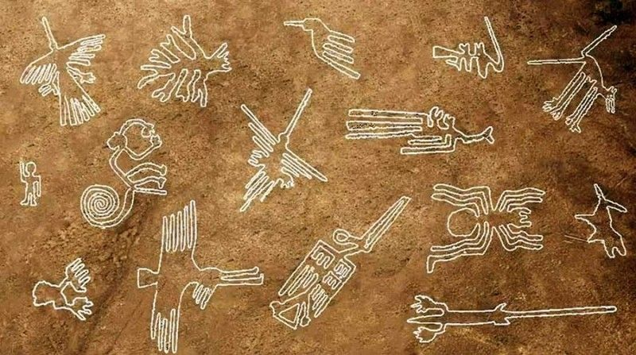

The Nazca Lines are a series of geoglyphs located in the desert of southern Peru. These ancient markings, some stretching over 1,200 feet in length, depict animals, geometric shapes, and even humanoid figures. The lines, created by the Nazca culture between 500 BCE and 500 CE, are only fully visible from the sky, sparking endless questions about how and why they were created.
The largest of these geoglyphs can only be appreciated from the air, which raises the intriguing question: How could an ancient civilization that did not possess airplanes or modern technology design such large-scale artworks? Some believe the Nazca people created these figures as a form of ritualistic offerings to the gods, while others suggest that the lines may have served as an astronomical calendar to track the movements of celestial bodies.
In recent years, some researchers have speculated that the lines could be linked to extraterrestrial visitors, with theories suggesting that the ancient Nazca people may have been attempting to communicate with beings from another world. Despite ongoing investigations, the full purpose and construction methods behind the Nazca Lines remain a mystery.
← Back to Explore